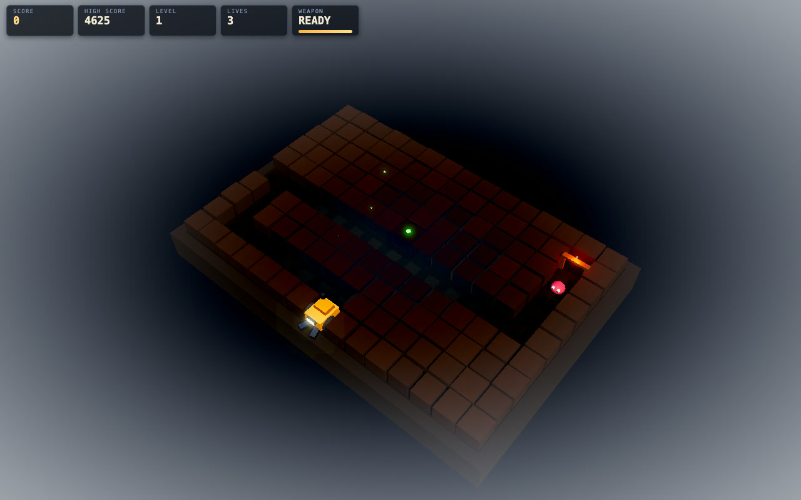

23 November 2026 · Agentic game · isometric 3D
Digger 3D · Inkling 2 Mini · MLX-Serve 26.11.4 prerelease · Tenaz main + Pi
Tenaz ended COMPLETE_WITH_GAPS after 26 h 9 min, 101 sessions and 25 tasks done. The final review's second cycle returned CHANGES and added T025 (pause overlay and audio duck) and T026 (level-complete banner, score summary and camera push-in), which were left to do. Played: a working Digger 3D with digging, buffered 90-degree turns, firing with a recharge, enemies from the portal, lives and game over; the Digger cannot reverse, level 1 has no gold bags and levels 2 and 3 have one each, and the board is dark.

What was checked
- Runner final state COMPLETE_WITH_GAPS on 23 November 11:46:31.923 UTC: 25 tasks done, T023 split, T023a dropped, T025 and T026 to do. Bootstrap: spec (51 requirements, R7 and R51 manual) and verify passed first time; the task cards were rejected once (R12 and R13 had no task) and accepted on the second session with 20 tasks. Replans added T021 (death, completion, pause, restart) and T022 (visual entities).
- Final review 1 returned CHANGES and added T023 (the high-quality canvas renders black after about 600 ms in headless Chrome) and T024 (duplicated HUD toggles). T023 was split after three attempts; T023a failed three attempts and was replaced by T023c, which isolated the bloom pass and was done. Final review 2 found every requirement met or manual except R35 (no LEVEL COMPLETE banner, score summary or push-in) and R47 (no pause overlay, soundtrack not ducked) and returned CHANGES; Tenaz's two-cycle limit left T025 and T026 open.
- Runner events: 9 of 101 sessions ended early and each was continued by a fresh session, not counted as an attempt: 5 above the context budget (83,082-89,727 of 63,897 tokens), 2 at the turn budget (61 turns, abort at 60 of 40), and 2 builder sessions of T017 that deleted .tenaz/private, which Tenaz handled as engine errors and retried. 9 context compactions. 19 replies stopped at the 16,384-token output limit; Tenaz lowered the reasoning effort of the next session of that role.
- Deleting .tenaz/private removed the Pi session logs, proxy records and memory samples of sessions 001-068; the journal, which keeps per-session usage and memory summaries, is intact. Tenaz's status line therefore reports 1,095 requests and a 93.0% prompt cache share for sessions 069-101 only.
- Configuration: Pi 1.6.0 over RPC with the openai-completions provider mlxserve-inkling, thinking high, vision, a 98,304-token context window and max_tokens 16,384; Tenaz main 2f1b04c with defaults, temperature 1.0, generic engine, sandbox off. The preflight reported reasoning, cache, tools and vision all true.
- Operator rerun of `verify --all` on 23 November after the run: 30 of 30 passed. Rerun again on a clean clone of the final commit f49578e with the run's node_modules: 30 of 30 passed, including the integration check that drives the game in headless Chrome and asserts zero external requests and no console errors or warnings.
- Played by Claude in a browser on 23 November (Vite dev server, 1280x800, quality HIGH): title screen with CRT, post-FX and sound toggles; HUD with score, high score, level, lives and weapon cooldown; the backquote debug overlay with the logical grid; about 120 fps. The Digger digs while driving at about 4.4 cells/s, buffered 90-degree turns work, Space fires with a 2 s recharge, enemies enter from the portal, chase and kill, and lives and game over work.
- Problems found in play: the Digger cannot turn 180 degrees (player.ts skips the opposite direction, so facing a wall the only way out is a perpendicular turn; the brief specifies only 90-degree turns, so this is a playability flaw, not a broken stated rule); level 1 has no gold bags and levels 2 and 3 have one each (levels.ts), so bags barely appear; the board is very dark and tunnels are hard to tell from earth. Not checked in play: emerald collection, bag push, fall and gold, level completion, bonus mode, sound.
- Engine metrics: one fresh mlx-serve process served only this run. Its 2,606 request summaries are 6 Tenaz preflight requests and 2,600 run requests. For every one of the 101 sessions, the sums of consecutive engine summaries equal the usage Tenaz journaled (fresh input, output and cached tokens), with 12 compaction requests and one aborted request between them. Tenaz's surviving proxy file holds 1,095 records, from the last turn of session 069 to the end. 1,092 of them, all in sessions 070-101, match engine summaries one-to-one, in order and uniquely by (prompt, cached, output); the other 3 are empty records of an errored or aborted turn. Pi's 1,094 responses in sessions 070-101 equal the proxy records. Sessions 001-069 cannot be matched per response.
- Memory: Tenaz's per-session summaries (3,099 samples at 30 s) report memory pressure normal in all 101 sessions; the mlx-serve process peaked at 30.0 GiB.
- Vision: no image refusals; 415 requests carried images.
- Public artifact: `npm run build` of the final commit f49578e in a copy of the project (output identical by filename hash to the run's own dist), with the three.js license notice. It uses relative paths, starts under the site's sub-path and made no request outside its folder in a headless check. Screenshot: a frame from that check at 1280x800, 1.2 s into a drive.
Limits of this evidence
Completion is the runner outcome. Inkling 2 Mini, a 26.4B-total, 3.4B-active looped mixture of experts, on mlx-serve's 26.11.4 prerelease at a 96K context, after slow oMLX and Ollama attempts of the same model were paused. The first Tenaz Digger 3D attempt with a playable build. Engine figures cover all 2,600 run requests from the mlx-serve log; per-response matching is possible only for sessions 070-101 because a builder session deleted .tenaz/private. Tenaz v0.8.0's runner code plus recovery fixes; the binary reports 0.8.0 (2f1b04c).
Configuration
The model, serving engine and agent used for this execution.
| Field | Value | Detail |
|---|---|---|
| Model · primary | Inkling 2 Mini · primary · reasoning high (Pi thinking level high; the chat template maps high to effort 0.9, also its default). Sessions after a reply stopped at the output limit ran at a lower effort set by Tenaz. | Per the pack's model card: the release's own expert weights (NVFP4 on layers 0-19, MXFP8 on 20-23), attention, embedding and head in MLX affine 8-bit with group size 64, vision tower in bf16. config.json declares affine 8-bit, group 64. |
| Checkpoint · primary | ddalcu/Inkling-2-Mini-MLX-8bit | primary model artifact · revision unrecorded (downloaded on 22 November 2026; file sizes checked against the Hugging Face tree, commit not kept) |
| Runtime | MLX-Serve 26.11.4-pre-release.1 · MLX 0.32.5; macOS arm64 prerelease archive mlx-serve-bin-macos-arm64.tar.gz, sha256 510de30e3db01786098e7022dddb84158462e2f2333b08dde1a63e0e3ccbc65e (matches the release digest; no build attestation published) · One mlx-serve process for the whole run, registered with Tenaz as a generic engine with start and stop scripts and reached through Tenaz's proxy. --ctx-size 98304 and defaults otherwise: KV cache not quantized, one request at a time, a hybrid hot prefix cache with a 4,192 MB budget, PLD on (draft length 5), DSpark speculative decoding with inkling2_loop native draft stages (block 8). The loader logged that it skipped mtp.safetensors because the weight index does not name it, so the log does not establish whether the bundled draft head was used. Every request ran at temperature 1.00 (pinned by Tenaz), top-p 0.95 and top-k 0 (the engine's values), thinking on, max_tokens up to 16,384. 96K rather than 128K: at --ctx-size 131072 mlx-serve clamped its hot-cache budget to 0 MB on this 64 GB Mac. mode | inference engine and exact build |
| Harness | Pi coding agent over RPC driven by Tenaz main 2f1b04c (it reports 0.8.0 (2f1b04c)) 1.6.0 | the agent or client that drove the run |
| Runner | Tenaz main · build 2f1b04c after 0.8.0 (unreleased) | open-source runner, github.com/aartiles/tenaz · how the runner evolved |
| Hardware | Apple MacBook Pro · 64 GB unified memory | hardware recorded for this execution |
| Workload | Digger 3D · revision 1 | The byte-identical Digger 3D prompt as CHALLENGE.md, behind the committed Tenaz brief (scripts/task-loop/briefs/digger-3d.md, the same file by hash as the Bonsai and LFM3 Tenaz attempts). Tenaz plans the work and runs one fresh Pi session per step. Its per-session context budget was 63,897 tokens (0.65 of 98,304). No operator action after launch. |
| Context window | 98,304 tokens | maximum context configured for the serving runtime |
| Repetitions | 1 | executions recorded for this workload; one means an indicative result, not an estimate |
Inference measurements
Engine-side rates for this run. Each figure states its own statistic; figures from different runs are not interchangeable.
| Metric | Value | Definition |
|---|---|---|
| Decode · per-request median | 35.65 tok/s | Median of mlx-serve's per-request decode rate across run requests with output. · n=2598 · 10th percentile 25.9, 90th percentile 54.2. Decode slows as the prompt grows: median 48.7 tok/s below 16K tokens, 30.2 above 64K. |
| Decode · output-weighted | 31.1055 tok/s | Total output tokens divided by the sum of each request's output tokens over its decode rate. · n=2598 |
| Cold prefill · median | 820.9 tok/s | Median of mlx-serve's logged prefill rate on requests with no cached tokens. · n=216 · Prompts of 262 to 79,010 tokens (median 25,488). mlx-serve does not log TTFT, so none is reported. |
| Accepted draft tokens per round | 2.5778 tokens/round | Total DSpark accepted draft tokens divided by total DSpark draft rounds, from mlx-serve's per-request spec-stats lines. · n=2598 · 476,232 accepted tokens over 184,744 rounds. mlx-serve does not log drafted-token counts, so this is not an acceptance percentage. |
| Server process memory · peak | 30 GiB | Largest mlx-serve process memory in Tenaz's 30-second samples, from the per-session summaries. · n=3099 |
| Swapped in during the run | 1.657 GiB | Swap-in pages summed over Tenaz's per-session memory summaries (108,563 pages of 16 KiB); host-wide swap I/O, not resident memory. · n=3099 · Memory pressure normal in all 101 sessions. Time between sessions is not sampled. |
Agent session counters
Agent-wide usage totals. These include reasoning, tool calls and waiting, and are not model decode speed.
| Metric | Value | Definition |
|---|---|---|
| Run elapsed | 1569.5 min | Session 001 start after the preflight (22 November 09:37:01.434 UTC) to COMPLETE_WITH_GAPS (23 November 11:46:31.923 UTC); includes tools, checks, retries and the two engine-retry waits. · n=1 · 26 h 9 min 30.5 s; no pauses. |
| Agent sessions | 101 sessions | All harness sessions: 4 bootstrap, 54 builder, 33 reviewer, 6 replan, 2 split and 2 final reviewer. · n=1 |
| Sessions ended early | 9 sessions | Sessions with ok=false: 5 above the context budget, 2 at the turn budget, 2 that deleted .tenaz/private and ended in an error. · n=101 · Each was continued or retried by a fresh session and not counted as an attempt. |
| Operator interventions | 0 actions | No pauses, relaunches, configuration changes or edits after the first session started. · n=1 |
| Model requests | 2,600 requests | mlx-serve request summaries after the 6 preflight requests; every request logged a summary. · n=1 · 12 are Pi's context-compaction requests and one is a turn aborted at the turn budget. |
| Matched model requests | 1,092 requests | Proxy records of sessions 070-101 matched one-to-one, in order and uniquely to mlx-serve summaries by (prompt, cached, output). · n=1092 · The proxy records of sessions 001-068 were deleted with .tenaz/private. Those sessions match only as per-session totals. |
| Tool calls | 2,685 calls | Sum of harness tool_calls across all 101 session records. · n=101 |
| Context compactions | 9 compactions | Compaction count across all session records. · n=101 · The engine log shows 12 compaction requests. |
| Responses stopped at the output limit | 19 responses | Engine summaries that ended with finish reason length at 16,384 output tokens. · n=2600 |
Context and token counters
Token totals as reported by the harness or engine. Cached and cumulative figures are not additive with fresh input.
| Metric | Value | Definition |
|---|---|---|
| Maximum prompt context | 81,914 tokens | Largest prompt across run requests; not the configured server window. · n=2600 · Tenaz's per-session context peak, which adds the reply, reached 89,727 tokens. |
| Cumulative input | 105,624,704 tokens | Sum of total prompt tokens across run requests, including repeatedly reused context; not unique input. · n=2600 |
| Cached input | 96,402,922 tokens | Sum of prompt tokens mlx-serve reported cached across run requests. · n=2600 |
| Fresh input | 9,221,782 tokens | Total prompt minus cached prompt tokens across run requests. · n=2600 |
| Output tokens | 2,300,863 tokens | Sum of output tokens across run requests, reasoning included. · n=2600 |
| of which reasoning output | 1,497,087 tokens | Reasoning tokens in Pi's usage, summed over the 101 journaled sessions. · n=101 · Pi's session usage excludes compaction requests; its output total is 2,260,093 tokens. |
| Prompt-cache token share | 91.2693 % | Cached prompt tokens divided by total prompt tokens, weighted by tokens across run requests. · n=2600 · 93.04% over the 1,092 matched requests of sessions 070-101, the figure Tenaz's status shows. |
Recorded check counters
Counts from the checks recorded with this run.
| Metric | Value | Definition |
|---|---|---|
| Tasks completed | 25 tasks | Final task cards marked done; T023 split, T023a dropped, T025 and T026 left to do. · n=29 |
| Reviews returning changes | 8 reviews | Task review verdicts returning CHANGES (T005 and T008 twice, T007, T011, T012 and T017 once). Both final reviews returned CHANGES. · n=33 |
| Project checks passing | 30 checks | Checks passing in `verify --all` on a clean clone of the final commit, rerun after the run. · n=30 · Model-written checks, not an independent acceptance suite. The integration check drives the game in headless Chrome. |
Request records & provenance
1092 numeric records for sessions 070-101 in proxy order, each matched one-to-one to an mlx-serve summary by (prompt, cached, output). Prefill and decode are mlx-serve's logged rates; with cached tokens its prefill rate is not a whole-prompt rate. mtp_attempts and mtp_accepts are DSpark draft rounds and accepted draft tokens. Sessions 001-069 are left out because their per-response records were deleted; the aggregate metrics use all 2,600 run requests from the engine log. No prompts, tool results, session identifiers or local paths are included.
Run ID: 2026-11-22-inkling-2-mini-mlx8bit-mlx-serve-v26114pre1-tenaz-main-2f1b04c-pi-digger-3d
One execution, with checks transcribed from the retained record. A completed session is not a quality score. Measurement method · All runs